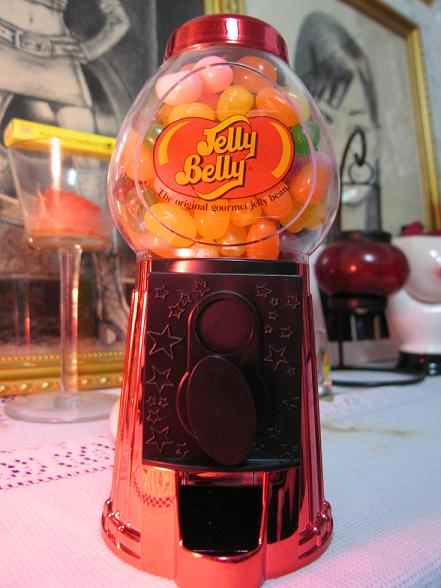

首先要对昨天晚上每一位来顶我的铃铛说声谢谢，谢谢你们那么的支持我．
昨晚第一次在八万人体育馆的舞台上唱歌，从它开始造的那天，心里就有了这个梦想，昨天终于实现了．．．
非常荣幸能够参加有关奥运加油的这个慈善演唱会，虽然我只是唱了一首歌，但还是很高兴自己能为奥运出一点力，能和大家一起来为奥运加油．．．昨晚的上坐率不太高，从舞台上看，内场观众很稀少，看台的就更不要说了．．．既然是这样，为什么安排票子的人不把内场填满呢？害得来看我的亲朋好友，尤其是我来顶我的铃铛们都坐在看台最远的地方，只能从大屏幕上看我，后来又得知从看台那边很难听清楚我在唱什么．走台的时候明明效果还可以的，没想到正式演出时，音乐和人声都小了很多，也许是调音台出了问题吧，总之，心里真的很郁闷．．．
演出完之后，我怀着郁闷的心情走出４号通道时，突然听到齐声大喊：＂豆豆豆豆我爱你，豆豆豆豆我们永远支持你＂天哪，好大惊喜，真的是铃铛们，他们一直在等我出来，在外面站了好久，刹那间，我浑身鸡皮疙瘩都起来，脑子里一片空白，像亲人一样，立刻朝他们奔过去，当铃铛们都围着我纷纷和我讲话的时候，我实在忍不住内心的感动流出了眼泪，不是我爱哭，是真的很出呼意料，很感动，感动到难过．难过是因为，大家特地大老远跑来看我，坐的却是看台，而且音响效果还不好，大家不但没抱怨，还给了我那么大的惊喜，一如既往的支持我．我知道的形容词不够形容我的心情，不管怎样，谢谢大家，我一定加倍努力，不让大家失望．．．
谢谢飞飞的文章，唱歌很好的可儿，小闻子的纸巾，还有没见到的小虾米，镜五花那么晚的留言，还有ＳＯＺＩＬ传上来的照片，，小猪猪和猪蹄，ＪＥＬＬＹ，还有新见到的铃铛们，谢谢你们．．．
谢谢ＳＯＺＩＬ，很漂亮，糖糖很好吃
